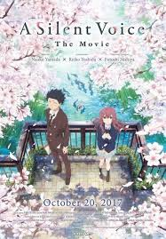
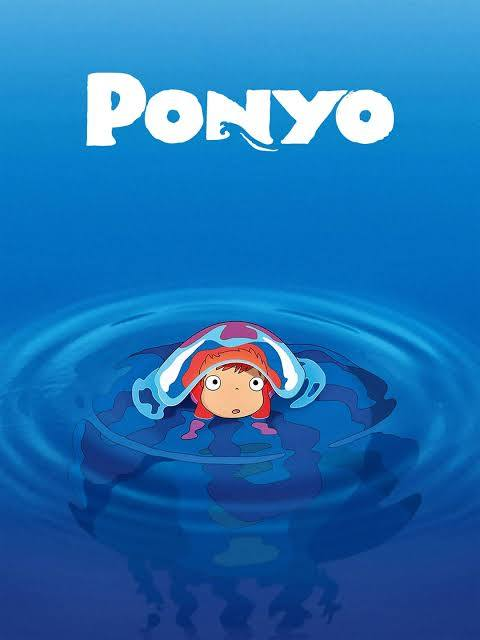
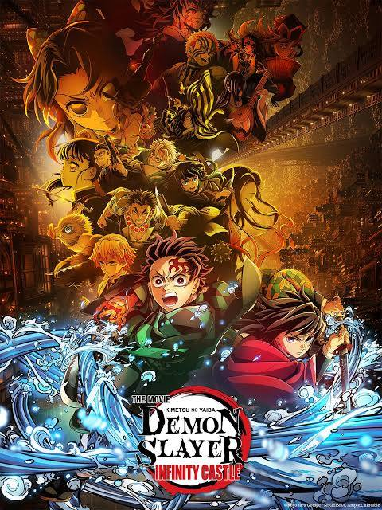
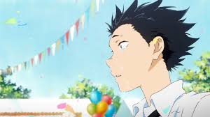
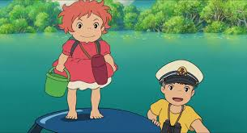
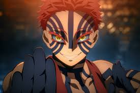

A Silent Voice

Ponyo

Demon Slayer: Infinty Castle

A Silent Voice (Koe no Katachi) is a poignant 2016 anime drama about Shoya Ishida, a former elementary school bully who becomes an isolated outcast after tormenting Shoko Nishimiya, a deaf transfer student. Years later, plagued by guilt, Shoya seeks redemption by trying to reconnect with and befriend Shoko.

During a forbidden excursion to see the surface world, a goldfish princess encounters a human boy named Sosuke, who gives her the name Ponyo. Ponyo longs to become human, and as her friendship with Sosuke grows, she becomes more humanlike. Ponyo's father brings her back to their ocean kingdom, but so strong is Ponyo's wish to live on the surface that she breaks free, and in the process, spills a collection of magical elixirs that endanger Sosuke's village.

Muzan Kibutsuji traps the Demon Slayer Corps in his shifting stronghold, forcing Tanjiro, Nezuko, and the elite Hashira into separate, desperate battles against powerful Upper Rank demons, including confrontations with Doma and Kaigaku, while searching for Muzan and Tamayo, leading to personal sacrifices and intense fights, especially Tanjiro's rematch with Akaza, revealing deep backstories and setting up the final confrontation.